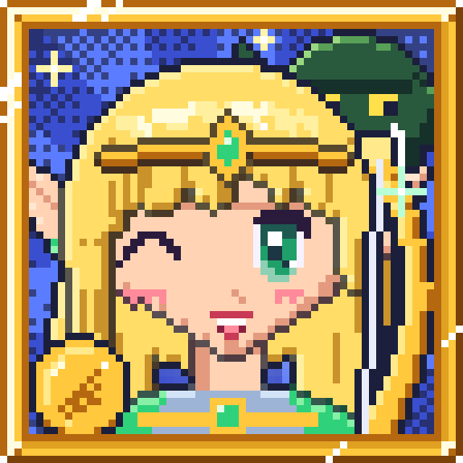
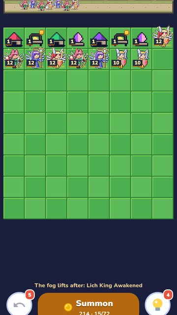

Pixel Valkyries
Merge pixel warrior maidens, collect heroines and lead your legion on a raid through a fantasy world!
On the citadel island, drag a warrior onto her twin and they merge into one, stronger and in new armour. The strongest of them march out onto the ring road by themselves, fight monsters and bosses and bring back loot, and the island grows as the fog lifts after your victories. A pixel merge strategy with idle raids that you can play offline.

- Three branches of fighters in a rock-paper-scissors ring: Vanguard, Rangers and Arcanists, 12 levels each.
- 8 commander heroines, each with her own special power. Unlocked by beating bosses and for soul shards, with no randomness at all.
- 60 stages in 15 chapters: forest, fire wastes, crystal caves and ancient ruins, with a boss at the end of every chapter. After that, the road goes on.
- Battles play by themselves: you merge, summon, pick your squad and unleash her special power at the right moment.
- While you are away, your legion keeps marching: loot for the time you were gone, up to 8 hours.
- Daily Raid: the same challenge for every player.
- Play offline, in English and Russian. No purchases.